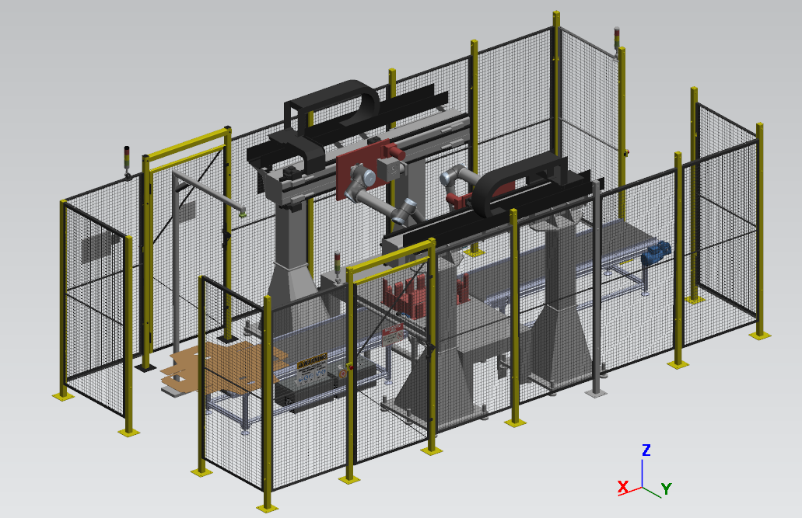
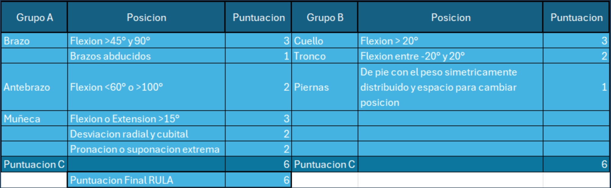
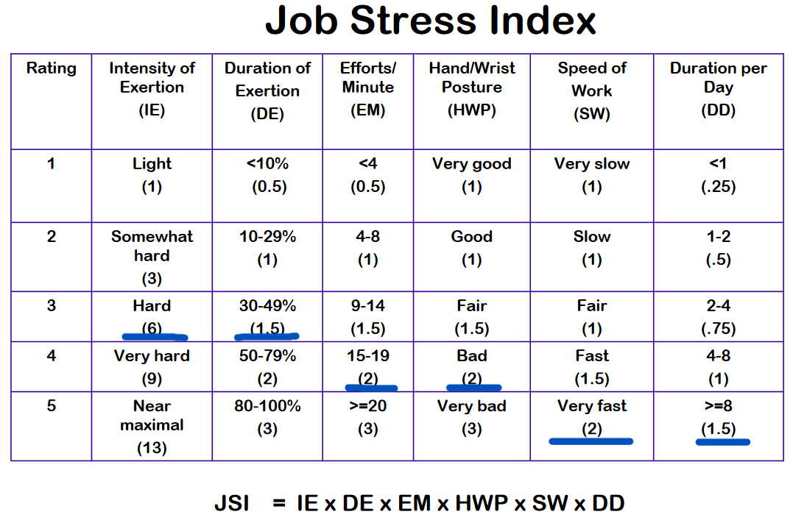
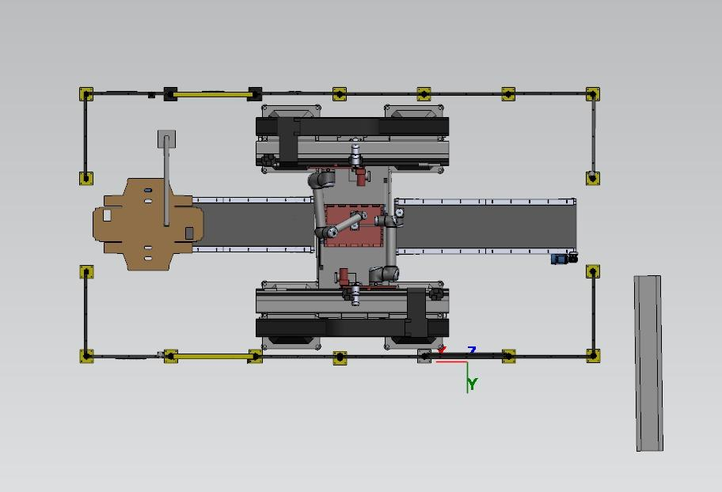
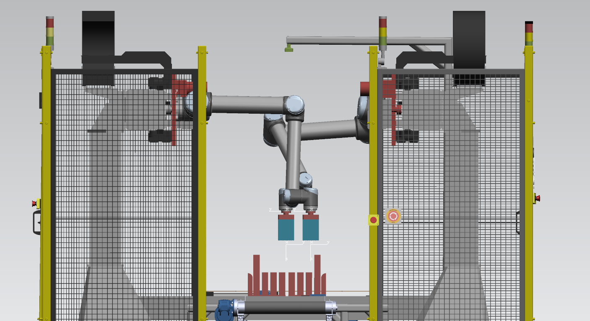
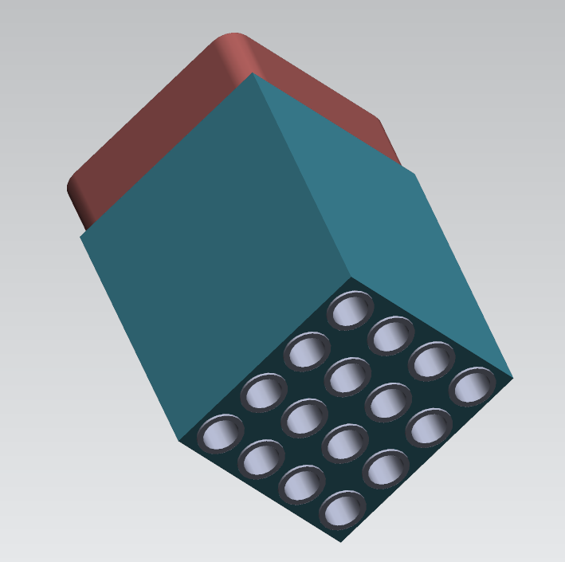
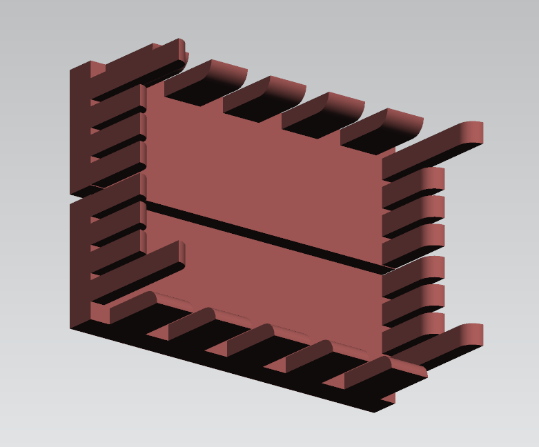
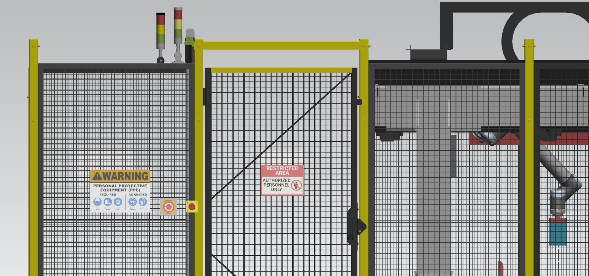
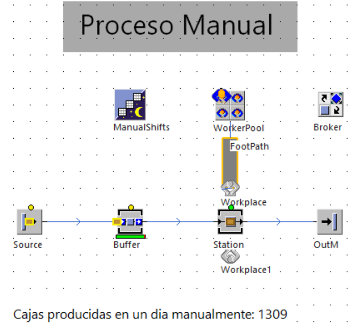
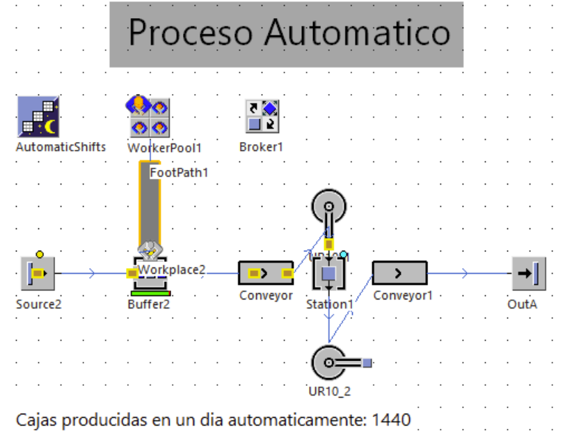

Automated robotic box folding cell
A robotic cell that folds flat carton blanks into boxes in four sizes, replacing a manual task that scored 6 on the RULA ergonomic scale. It was designed with Carrier and sized with a digital twin. Every result for the cell is a projection from the simulation model. The cell was not built.

- Boxes per day, from 1,309
- 1,440 Projected
- Operators required, from 4
- 1 Projected
- Box sizes handled
- 4 Design
The challenge
Four operators, two per shift on two shifts, folded carton boxes by hand at 11 seconds per box, for 1,309 boxes a day across four box sizes. Each box arrived as a flat, cross-shaped carton blank, and the operators folded its flaps by hand until it took shape. The task is repetitive, forces awkward postures and takes physical effort. The project was to design a robotic cell that handles all four sizes and meets the ANSI/RIA R15.06-1999 safety standard, and to check in simulation what it would deliver.
What I did
- Designed the cell layout integrating two UR10 collaborative robots, vacuum grippers, linear rails, conveyors and PLC-based control, with a Cognex vision system that detects blank size and automatically adjusts the fixture across four box formats.
- Modeled the material flow of the manual process and the robotic cell in Siemens Tecnomatix Plant Simulation to compare daily output, cycle time and headcount, and validated the full robot sequence in Process Simulate.
- Worked in a team of four that also covered the ergonomic analysis, safety design, budget and financial analysis.
Ergonomic analysis
The case for automating started with the people doing the job. The team scored the manual task with RULA, which rates the posture of the neck, trunk and upper limbs. The result was 6 out of 7, action level 3: changes needed soon, through redesign, task rotation or automation.
The Job Strain Index (JSI) multiplies six factors: intensity of exertion, duration of exertion, efforts per minute, hand and wrist posture, speed of work and hours per day. For the manual process it came out at 108.
| Body part | Position | Score |
|---|---|---|
| Upper arm | Flexion 45°–90° | 3 |
| Upper arm | Arm abducted | 1 |
| Lower arm | Flexion < 60° or > 100° | 2 |
| Wrist | Flexion or extension > 15° | 3 |
| Wrist | Radial or ulnar deviation | 2 |
| Wrist | Extreme pronation or supination | 2 |
| Group A score | 6 | |
| Neck | Flexion > 20° | 3 |
| Trunk | Flexion between −20° and 20° | 2 |
| Legs | Standing, weight evenly distributed, room to change position | 1 |
| Group B score | 6 | |
| Final RULA score | 6 |
| Factor | Level observed | Multiplier |
|---|---|---|
| Intensity of exertion | Hard | 6 |
| Duration of exertion | 30–49% | 1.5 |
| Efforts per minute | 15–19 | 2 |
| Hand/wrist posture | Bad | 2 |
| Speed of work | Very fast | 2 |
| Duration per day | ≥ 8 h | 1.5 |
| Job Strain Index | 108 |
See the original RULA and JSI worksheets from the report


Cell design
Two UR10 robots, each rated for 10 kg with a 1,300 mm reach and ±0.1 mm repeatability, ride on linear rails around a central folding fixture, so both can work on the same box in parallel. A Cognex camera reads each blank's size and checks it for defects, and a PLC coordinates the robots, grippers, sensors and conveyors.
- Two custom vacuum grippers, each with a 4 × 4 array of TXN-38 suction cups and 288 N of total holding force.
- An adjustable fixture with 13 vertical plates that guide and hold the blank and four raised plates that fold the inner flaps. It resizes itself on its own linear rail.
- Modular conveyors that carry the blanks between inspection, folding and output.
-

Top view: input conveyor, fixture, robots on rails and output conveyor. -

Front view: both robots at the fixture, with emergency stops and signal towers on the fence. -

Custom vacuum gripper. -

Folding fixture.
How the cell works
- Load and inspect. The flat carton blank goes on the input conveyor. A Cognex camera detects its size and checks it for defects such as stains or deformation.
- Adjust the fixture. A presence sensor stops the conveyor and tells the PLC. The fixture moves on its own rail to the detected size.
- Pick. A UR10 on its linear rail moves to the blank and picks it with the suction gripper.
- Place. The rail moves the robot in front of the fixture, and the robot places the blank on it.
- Fold. Both robots push the blank down to trigger the fixture, which folds the main flaps to 90°. Then one robot holds a side flap while the other folds the adjacent one, and finally each robot folds one of the last two flaps at the same time.
- Hand off. The second robot picks up the folded box and places it on the output conveyor.
Safety
The cell was designed against ANSI/RIA R15.06-1999. It has perimeter fencing that keeps people out of the robot area, doors with sensors, emergency stops, signal towers that show normal, warning or emergency state, and signs for hazard zones and required protective equipment. Presence sensors at the box inputs and outputs, not modeled in CAD, report to the PLC to keep the sequence in order.

Results
The team built a digital twin in two tools: Process Simulate for the cell itself, with the robots, rails, conveyors, grippers and fixture running the full sequence, and Plant Simulation to compare the manual process against the cell. Output rises 10% and the headcount falls 75%.
Daily output and operators required: starting point compared with the simulated cell.
- Starting point
- Hatched: projection from simulation
-

Plant Simulation, manual process: two workers a shift, two shifts, 1,309 boxes a day. -

Plant Simulation, automated process: two pick-and-place tools for the robots, one worker, 1,440 boxes a day.
Figures, tables and results come from the team's technical report for the course, dated June 15, 2025. Screenshots keep their original Spanish labels.
What I learned
Start from the people doing the work. I learned how to take an automation from scratch, beginning with the problem and its ergonomic risk. RULA and JSI turned "this job is hard on the body" into numbers, and showed me that a solution has to be safe and comfortable for workers, not only efficient.
Simulate before you build. Process Simulate and Plant Simulation let us validate the whole design before building anything. They showed that the cell raises output, cuts the headcount and, above all, lowers the physical strain on operators.
Details decide the design. From choosing the robot to placing sensors and actuators and planning motion paths, small details shaped the result.